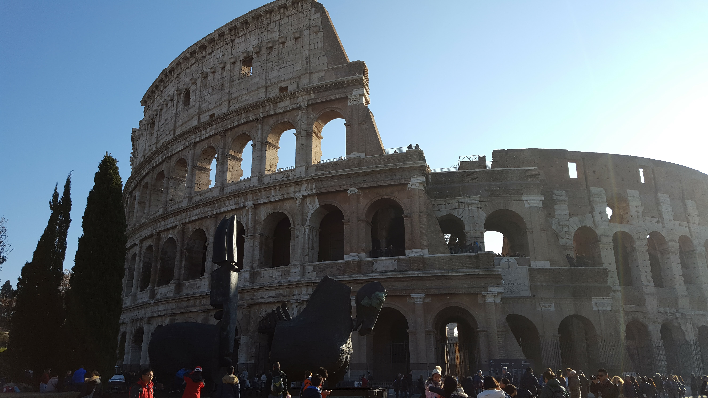

L’Italie, c’est bien plus qu’un pays : c’est un voyage à travers le temps. Berceau de l’Empire romain, cœur de la Renaissance, terre d’art, de culture et de passion — chaque pierre, chaque ruelle raconte une histoire. De Rome, la ville éternelle, à Florence, capitale des arts, jusqu’à Venise, la cité sur l’eau, l’Italie nous plonge dans une mosaïque d’émotions et de beautés.
Mais l’Italie, c’est aussi une aventure contemporaine. Voyager de région en région, c’est en découvrir mille visages : les collines de Toscane baignées de soleil, et la chaleur du Sud, en Sicile.
C'est revenir dans le passé, revisiter la mythologie, découvrir les derniers vestiges de Pompeï. Tellement tombé sous le charme de ce pays que j'y suis retourné plusieurs fois... Chaque voyage est une nouvelle découverte, une nouvelle histoire à raconter.



Rome, surnommée la Ville éternelle, est à Noël un musée vivant où traditions religieuses et patrimoine antique se rejoignent. Ici, la pierre et la lumière se parlent depuis des siècles.


Quand vient Noël, les églises ouvrent leurs portes. Sur la place Saint-Pierre, la grande crèche attire les regards. Mais même en arrivant très tôt, la foule est déjà là — dense, émue, silencieuse parfois. Impossible de s’approcher de la basilique : elle se dresse au loin, majestueuse, mais inaccessible. Autour, les pierres ont vu passer les empereurs, les papes, les foules de pèlerins…


Au cœur de Rome, loin du bruit des rues, la Villa Médicis repose, paisible, entre les pins du Pincio. Ici, le temps semble ralentir.


Le vent glisse entre les branches, la lumière danse sur les pierres claires, et tout respire la sérénité. Depuis des siècles, la Villa Médicis accueille les artistes, les rêveurs, ceux qui cherchent la beauté dans le silence.


Ses jardins, baignés de lumière, dominent la ville éternelle — mais ici, on entend surtout le souffle du vent et le chant des oiseaux.
Entre les statues et les cyprès, on comprend que Rome n’est pas seulement faite de pierres et d’histoire, mais aussi de calme et d’harmonie.
Pompéi… une cité figée dans le souffle brûlant du temps. Sous le regard majestueux du Vésuve, chaque pierre, chaque ruelle, chaque fresque, chaque ombre garde en mémoire l’éruption de ce géant.
Et puis, bien des siècles plus tard, la musique des Pink Floyd est venue réveiller les fantômes. Là où le feu avait tout pris, le son a redonné vie. Pompéi n’est plus seulement une ruine : c’est un poème de pierre, de feu et de musique éternelle.


Majestueux et silencieux, le Vésuve domine la baie de Naples comme un roi endormi. Sa silhouette, paisible sous le soleil, cache pourtant une puissance qui a marqué à jamais la terre et la mémoire. Depuis ses pentes, le regard embrasse la mer, les toits de Naples et les vestiges de Pompéi, figés dans le temps. Le volcan veille : témoin immobile d’une histoire gravée dans la cendre et la lumière.


Sous les cendres du Vésuve, la cité de Pompéi murmure encore les échos d’un monde disparu. Les rues, les fresques et les ruines racontent la vie de gens surpris par le feu, et pourtant préservé pour l’éternité. Marcher ici, c’est remonter le temps.